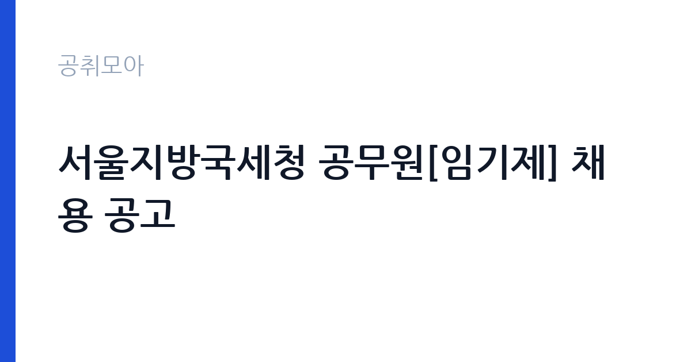

[국가기관] 서울지방국세청 공무원[임기제] 채용 공고
국세청 서울지방국세청 · 서울 · 마감 2026-10-20 (D-13) · 출처 나라일터

한눈에 보는 모집 조건
| 기관 | 국세청 서울지방국세청 |
|---|---|
| 공고명 | 서울지방국세청 공무원[임기제] 채용 공고 |
| 고용형태 | 임기제 |
| 근무지 | 서울 |
| 게시일 | 2026-10-08 |
| 마감일 | 2026-10-20 (D-13) |
지원자격, 이렇게 읽으세요
- 일반임기제 6급 1명
- 접수 ~2026-10-20 마감
- 세부 조건은 원문 공고문 확인
선발 직급은 일반임기제 6급이며 자격요건으로 자격증을 요구합니다. 조사지원 분야인 만큼 세무나 회계 관련 자격과 실무 경력을 중심으로 평가하며, 세부 기준은 원문 공고문의 첨부파일에서 확인해야 합니다. 국가공무원법상 결격사유에 해당하지 않아야 하며, 남성은 병역을 마쳤거나 면제된 분만 지원할 수 있습니다. 연령은 18세 이상이며 정년 범위 내여야 합니다. 임기제 공무원은 계약 기간이 정해져 있으므로 임용 기간과 연장 가능 여부를 원문에서 반드시 확인하시기 바랍니다.
이 공고의 포인트
이 공고의 매력은 서울지방국세청 6급 임기제라는 점입니다. 국가공무원 신분으로 세무 조사 지원 실무를 맡게 되며, 관련 경력을 쌓으면 다음 임기제나 일반직 채용에서도 경쟁력이 커집니다. 1명 선발이라 문턱이 있지만, 자격 요건을 갖춘 분에게는 경쟁자가 한정된 기회입니다. 근무지가 서울이라 수도권 거주자에게 통근 부담이 적습니다. 다만 접수 방법이 등기우편과 방문으로 한정되어 있어 온라인 접수에 익숙한 분은 기간을 놓치지 않도록 주의해야 합니다.
전형은 어떻게 진행되나
전형은 국가공무원 경력경쟁채용 절차를 따릅니다. 서류전형과 면접시험 순으로 진행되며, 서류전형에서는 자격요건 충족 여부와 경력, 자기소개서를 평가합니다. 면접에서는 직무 전문성과 공직 가치관을 묻는 질문이 나옵니다. 접수 기간이 10월 14일부터 20일까지로 짧으므로 서류를 미리 갖춰야 합니다. 등기우편 접수자는 우체국 소인 기준으로 마감일을 지키고, 방문 접수자는 근무시간을 확인하시기 바랍니다. 세부 일정과 합격자 발표는 원문 공고문에서 확인하시기 바랍니다.
원문에서 확인한 전형 방식
서울지방국세청 공고 제2026-42호 서울지방국세청 공무원[임기제] 채용 공고 서울지방국세청에서는 공무원임용시험령 제3조 및 제47조에 따라 우수 인재의 공직유치를 위한 국가공무원 경력경쟁채용시험을 다음과 같이 공고하여 시행하오니 많은 응시 바랍니다. 2026년 10월8일 서울지방국세청장 ○ 모집분야 : 조사지원(1명) ○ 선발직급 : 6급 ○ 근무예정지 : 서울 ○ 고용형태 : 임기제 ○ 자격요건 : 자격증 ○ 접수기간 : 2026년 10월 14일 ~ 10월 20일 ○ 응시방법 : 등기우편접수 또는 방문 접수 ○ 문의처 : 02-2114-3606 ○ 기타내용은 첨부파일 참조
이런 분께 추천해요
- 세무나 회계 자격과 실무 경력을 갖춘 분께 추천합니다. 조사지원 업무와 직접 연결됩니다.
- 국가공무원 경력을 시작하고 싶은 분께 추천합니다. 임기제 경력은 다음 공직 도전의 밑거름이 됩니다.
- 서울 근무를 희망하는 세무 분야 전문가께 추천합니다.
지원 전 체크리스트
- 원문 공고문에서 조사지원 분야의 자격증과 경력 기준을 대조했습니다.
- 경력증명서와 자격증 사본, 병적증명서 등 증빙서류를 준비했습니다.
- 등기우편 발송 일정과 방문 접수처, 근무시간을 확인했습니다.
- 접수 기간인 10월 14일부터 20일 사이에 접수를 완료하고 접수증을 보관했습니다.
모집 일정과 제출 타이밍
접수 기간은 2026년 10월 14일부터 10월 20일까지로 일주일에 불과합니다. 등기우편 접수자는 배송 기간을 감안해 최소 이틀 전에는 발송해야 하며, 방문 접수자는 마감일 혼잡을 피해 미리 다녀오는 것이 좋습니다. 서류합격자 발표와 면접 일정은 원문 공고문의 전형 일정을 따릅니다. 증빙서류 발급에 시간이 걸리므로 지금 즉시 신청하시기 바랍니다.
직무 이해하기: 국가기관
조사지원 업무는 세무 조사 현장과 자료 분석을 지원하는 실무를 맡습니다. 조사 자료를 정리하고 전산 데이터를 분석하며, 조사관의 현장 업무를 보조합니다. 세법과 회계 지식이 필수이며, 정확한 자료 처리와 보안 유지가 중요하게 평가됩니다. 서울지방국세청은 수도권 세무 행정을 총괄하는 기관이라 다루는 사건 규모가 크고, 실무를 통해 세무 전문성을 빠르게 쌓을 수 있습니다. 임기제라 계약 기간이 정해져 있으나, 근무 실적에 따라 연장될 수 있습니다.
자기소개서 작성 팁
자기소개서에서는 세무와 회계 실무 경험을 직무와 연결하는 것이 핵심입니다. 조사 지원이나 자료 분석, 세무 신고 대리 경험을 기간과 역할, 성과 순서로 구체적으로 쓰시기 바랍니다. 세법 이해도와 정확한 자료 처리 능력을 사례로 보여주면 설득력이 커집니다. 국가공무원으로서의 청렴 의지와 납세자 권리 보호에 대한 인식을 한 문단으로 정리하면 마무리가 좋습니다.
면접 준비 포인트
면접에서는 세무 실무 지식과 공직 가치관을 함께 평가합니다. 조사지원 업무 이해도와 관련 법규 지식을 묻는 질문에 정확히 답변할 수 있어야 합니다. 조사 현장에서 겪을 수 있는 윤리적 딜레마나 민원 응대 시나리오 질문이 나올 수 있으므로 본인 기준을 정리해 두시기 바랍니다. 임기제 취지와 계약 기간에 대한 이해를 보여주고, 기간 내 성과를 내겠다는 각오를 전달하시기 바랍니다.
급여·근무조건 읽는 법
보수는 국가공무원 보수 규정에 따라 일반임기제 6급 상당을 적용받습니다. 기본급에 수당과 상여금이 더해지는 구조이며, 정확한 기본급과 수당 금액은 원문 공고문의 보수 안내에서 확인하시기 바랍니다. 임기제 공무원은 계약 기간이 정해져 있으므로 연봉 총액 기준으로 판단하는 것이 좋습니다. 초과근무가 발생하면 별도 수당이 지급됩니다. 실수령액은 연금과 보험, 세금 공제 후 금액이므로 세전 연봉과 구분해서 이해하시기 바랍니다.
자주 묻는 질문
- 임기제 공무원은 정규직과 어떻게 다릅니까
계약 기간이 정해진 국가공무원입니다. 기간 내에는 공무원 신분과 보수를 적용받으며, 근무 실적에 따라 기간 연장이 가능합니다. 정확한 임용 기간은 원문 공고문에서 확인하시기 바랍니다. - 접수는 어떻게 합니까
2026년 10월 14일부터 20일까지 등기우편이나 방문 접수로만 받습니다. 온라인 접수는 해당되지 않으니 기간과 방법을 놓치지 마시기 바랍니다. - 어떤 자격이 필요합니까
조사지원 분야 자격증을 요구합니다. 세부 자격과 경력 기준은 원문 공고문의 첨부파일에서 확인하시기 바랍니다.
함께 보면 좋은 공고
[국가기관] 보건복지부 요양보험운영과 파견근무자 모집 (3차) — 마감 2026-10-23[국가기관] 창원지방법원 공무직 근로자(시설관리원) 채용 공고 — 마감 2026-10-19[국가기관] 2026년 제6회 서청주우체국 공무직 상시계약집배원(농어촌소포배달원) 채용 공고 — 마감 2026-10-15출처: 나라일터 공개정보를 바탕으로 공취모아가 정리한 안내글입니다. 모집 조건·일정은 변경될 수 있으니 지원 전 반드시 원문 공고문을 확인하세요. 본 글은 정보 제공용이며 합격을 보장하지 않습니다.